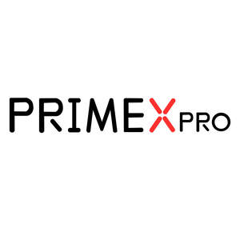
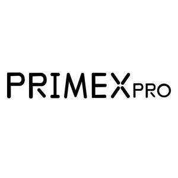

Trade Mark Journal No.2025/013 28 March 2025
UK00004166109 27 February 2025 (9,28)
Mark 1

Mark 2

- Class 9
- Projector screens; Screens; Projection screens; Filter screens for computer screens; Projectors; Anti-glare screens; LCD projectors; Display screens; Computer screens; Holographic screens; Monitor screens; Film screens; Video screens; Projection screens for movie films; Video display screens; Movie projectors; Screen filters for computers and televisions; Film projectors; Fluorescent screens; Filters for television screens; Planetarium projectors; Optical viewing screens; Video projectors; Screens [photography]; Slides for overhead projectors; Visual display screens; Screens for photoengraving; Holographic projectors; Display screen filters adapted for use with computer monitors; Portable projectors; Smartphone screen magnifiers; Slide projectors; Picture projectors; Overhead projectors; Display screen filters adapted for use with tablet computers; Multimedia projectors; Flat panel electroluminescent display screens; Display screen filters; Touch screens; Anti-glare filters for televisions and computer monitors; Computer screen filters; Laser projection televisions; Home theater projectors; LCD large-screen displays; Optical filters for screens; Interactive graphics screens; Lenses for projectors; Image projectors; Digital projectors; Cinematographic projectors; LCD [liquid crystal display] projectors; Mini projectors; Movie editing projectors; Protective films adapted for computer screens; Mini beam projectors; Batteries for projectors; Motion picture screens; Video projection monitors; Large-screen LCDs; Sound projectors; Screen savers; Remote controls for projectors; Display screen protectors in the nature of films for mobile phones; Profile projectors; Liquid crystal display screens; LED screen displays; Photographic projectors; Photography projectors; Display devices, television receivers and film and video devices; Telephone sets with screen and keyboard; Mobile phone display screen protectors in the nature of films; Interactive touch screen terminals; Expandable screen smartphones; Downloadable screen savers for computers; Motion picture projectors; Transparent films [photographic, exposed] for overhead projectors; LCD panels; Optical filters for plasma display panels; Downloadable screen savers for phones; Speakers for video conferencing; Video conferencing apparatus; Audio speakers; Conferencing cameras; Audio speakers for home; Video cameras for broadcasting; Video streaming devices; Video mixers; Video devices; Video monitors; Video tapes; Audio loudspeaker systems; 360º video cameras; Video surveillance cameras; Video surveillance systems; Video imaging systems; Routers for routing audio, video, and digital signals; Video digitizers; Audio recording equipment; Soundbars; Soundbar speakers; Subwoofers; Sub-woofers; Hi-fi stereo systems; Wireless audio speakers; Wireless speakers; Speakers; Loudspeakers; Wireless speaker microphones; In-ear headphones; Loudspeaker cabinets; Portable speakers; Speakers [audio equipment]; Sound amplifiers; Speakers for computers; Headphones; Wireless headphones; Loudspeaker cables; Smart speakers; Pairable wireless speakers; Wireless headsets for smartphones; Earphones for smartphones; Surround sound systems; Monitor speakers; Amplifier tuners; Loud speakers; Audio mixers; Loudspeaker housings; Earphones; Headsets; Racks for amplifiers; Audio cable; Keyboard amplifiers; Horns for loudspeakers; Cases for headphones; Head-mounted video displays; Head-mounted video display apparatus; USB chargers adapted for car cigarette lighter sockets; Wireless portable printers for use with laptops and mobile devices; Computer printer; Printers; Computer printers; Print heads for computer printers; Print heads for inkjet printers; Laser printers; Photo printers; Laser document printers; Print heads for printers; Thermal printers; Printer sharers; Laser color printers; Thermal printer heads; Toner cartridges, unfilled, for printers and photocopiers; Solid ink cartridges [empty] for ink-jet printers; Colour printers; Dry Laser imager printers; Printers for use with computers; Digital colour printers; Toner cartridges, unfilled, for printers; Ink cartridges, unfilled, for printers and photocopiers; Digital color printers; Document printers for computers; Integrated output printers; Ticket printers; Colour document printers; Laser printers for dry films; Laser beam printers; Multifunction computer keyboards; Electronic scale rules; Digital bathroom scales; Portable digital luggage scales; Remote controls for operating scale model vehicles; Scales; Kitchen scales; Electronic weighing scales for kitchen use; Kitchen weighing scales; Bathroom scales; Electronic scales; Postage scales; Miniature circuit breakers; Weights for use with weighing scales; Pressure scales; Scales with body mass analyzers; Camera tripods; Camera lenses; Camera flashes; Compact digital cameras; Helmet camera mounts; Tripods [for cameras]; Zoom lenses for cameras; Digital cameras; Waterproof camera cases; Bags for cameras; Camera filters; Laptop bags; Bags specially adapted for projectors; Camera straps; Bags adapted for laptops; Bags adapted for carrying photographic apparatus; Earbuds; Music headphones; Two-way plugs for headphones; Noise cancelling headphones; Ear phones; USB cables for cellphones; Clip-on sunglasses; Ear plugs for divers; Ear buds; Portable speaker docks; Car speakers; Computers and computer hardware; Computer hardware; Computer mousepads; Wireless computer peripherals; Computer mouses; Computer keyboards; Computer systems; Computer cabling; Power banks; Power wires; Power controllers; Power meters; Motion sensors; Disposable latex gloves for laboratory use; Disposable gloves for laboratory use; Disposable plastic gloves for laboratory use; Fire resistant gloves; Gloves for protection against accidents; Asbestos gloves for protection against accidents; Protective goggles; Headgear being protective helmets; Cash registers; Cash dispensing machines; Numerical counters; Payment terminals, money dispensing and sorting devices; Automatic paying-in and deposit machines; Coin change dispensers; Counters; Coin counting or sorting machines; Coin accumulators [totalisers]; Coin-operated mechanisms for vending machines; Currency recognition machines; Fluorescent lamp ballast for electric lights.
- Class 28
- Toys; Toys, games, and playthings; Toys and playthings for pets; Ride-on toys; Cuddly toys; Puzzles [toys]; Toys for sandpits; Plush toys; Stuffed toys; Toys for babies; Inflatable toys; Toys for pets; Wind-up toys; Fidget toys; Toys for use in perambulators; Radio-controlled toys; Plastic toys; Scooters [toys]; Crib toys; Toys for animals; Mobiles [toys]; Toys, games and playthings for pet animals; Pet toys; Windup toys; Rattles [toys]; Toys for cats; Toys for infants; Model cars [toys or playthings]; Wooden toys; Toys and playthings for pet animals; Toys for dogs; Toy dolls; Educational toys; Toy playsets; Models being toys; Bath toys; Infant toys; Dog toys; Sandbox toys; Bathtub toys; Electronic toys; Action figures [toys or playthings]; Inflatable ride-on toys; Whistles [toys]; Sand toys; Soft toys; Miniature car models [toys or playthings]; Controllers for toys; Bouncing toys; Drones [toys]; Cloth toys; Musical toys; Tricycles for infants [toys]; Toy figurines; Play mats for use with toy vehicles [playthings]; Toy furniture; Toys for birds; Mechanical toys; Wheeled toys; Developmental toys; Fluffy toys; Plastic toys for use in the bath; Stuffed animals [toys]; Inflatable bath toys; Stacking toys; Fabric toys; Water toys; Plastic models being toys; Play mats incorporating infant toys [playthings]; Toy prams; Drawing toys; Action toys; Stuffed and plush toys; Plush stuffed toys; Battery-operated action toys; Sketching toys; Toy bicycles; Smart toys; Whistling toys; Plastic character toys; Toy wheelbarrows; Talking toys; Squeeze toys; Toy mobiles; Toy cars; Pull toys; Toy balloons; Intelligent toys; Toy scooters; Music box toys; Toy hats; Toy cookware; Toy automobiles; Smart plush toys; Novelty toys for parties; Inflatable pool toys; Toy bakeware; Puzzle mats [toys]; Toy balls; Playthings; Toy flowers; Outdoor toys; Christmas stockings; Christmas tree ornaments; Christmas tree decorations; Ornaments for Christmas trees; Decorations and ornaments for Christmas trees; Christmas dolls; Christmas crackers; Toy Christmas trees; Christmas trees of synthetic material; Toy guns; Toy water guns; Toy air pistols; Water guns [playthings]; Toy fireworks; Air pistols [toys]; Paintball guns; Toy armor; Toy aircraft; Toy microphones; Toy projectors; Toy microscopes; Radio-controlled toy vehicles; Toy periscopes; Toy gliders; Toy guitars; Toy binoculars; Toy robots; Pistols (Toy -); Toy harmonicas; Toy garages; Toy bakeware and toy cookware; Toy swords; Toy vehicle playsets; Vehicles (Radio-controlled toy -); Toy model cars; Radio-controlled toy robots; Plug-in bricks [toys]; Toy pedal cars.
PRIMEX PRO LIMITED